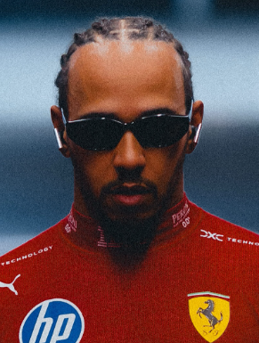

Lewis Hamilton
Lewis Hamilton
Team: Scuderia Ferrari
Team Principal: Frédéric Vasseur
Number: 44
Nationality: United Kingdom
Debut: 2007
Born: 7 January 1985
History: British driver Lewis Hamilton is widely regarded as one of the greatest Formula 1 drivers of all time. After achieving unprecedented success with Mercedes, including seven World Drivers’ Championships, Hamilton made a historic move to Ferrari in the later stages of his career. Known for his combination of racecraft, consistency, adaptability, and leadership, he has influenced the sport both on and off the track through his activism, professionalism, and global popularity. Even approaching the latter phase of his career, Hamilton remained highly competitive and continued pursuing a record-breaking eighth world title with Ferrari.
